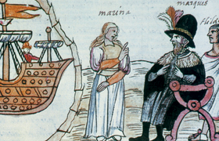

Lezione 11  Conquista delle Americhe
Conquista delle Americhe

Felipe Guamàn Poma de Ayala, un inca nato intorno al 1535, scrisse nel 1615 al re di Spagna Filippo III, anticipandogli l’invio di un manoscritto di quasi 1.200 pagine sulla storia del Perù. Nel prologo, rivolto ai “cristiani lettori Spagnoli”, è esplicita l’intenzione di lasciare una testimonianza dei misfatti compiuti dagli spagnoli ai danni degli indiani del Perù.
Il libro è scritto in spagnolo. Rimase inedito fino al 1936, quando fu pubblicato per conto del Musée de l’Homme di Parigi. Risultò di grande importanza per conoscere la storia del Perù precoloniale e delle conquiste degli spagnoli.
Nel brano che segue l’autore racconta la brama che gli spagnoli avevano nei confronti dell’oro e dell’argento americani.
«Don Francisco Pizarro e don Diego de Almagro, i due capitani generali, e gli altri, misero insieme trecentocinquanta soldati. Tutta la Castiglia era in grande fermento: “Le Indie, le Indie, oro, argento, oro, argento del Perù”. Persino i musicanti cantavano la romanza “le Indie, l’oro, l’argento”. E si misero insieme i detti soldati e messaggeri del re Nostro Signore Cattolico di Spagna e del Santo Padre Papa.
Nei millecinquecentododici anni, Papa Giulio II, del suo pontificato sette, Imperatore Massimiliano II, del suo impero diciassette, regina di Spagna donna Giovanna, del suo regno cinque, Vasco Nuñez de Balboa ebbe notizia del Mare del Sud. A questa notizia, si eccitò ancora più il paese. Che, se la regina lo avesse permesso, credo che l’intera Castiglia sarebbe partita a una notizia così ricca e agognata: oro e argento. Si credeva che la gente era tutta vestita di oro e argento e che il suolo che calpestavano era tutto di oro e argento. Tuttora dura quel desiderio di oro e argento e si ammazzano gli spagnoli e spogliano i poveri indiani. E per l’oro e l’argento è ormai spopolata parte di questo regno, i villaggi dei poveri indiani, per l’oro e l’argento».
(Felipe Guamàn Poma de Ayala, Conquista del Regno del Perù, Sellerio Editore, Palermo, 1992)